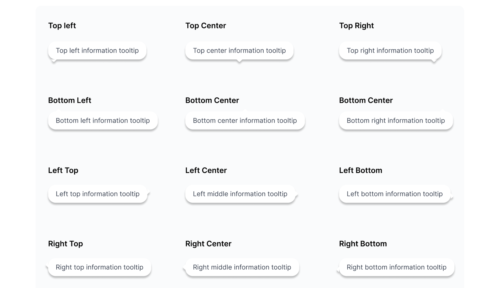

Company
Aperia
Design System Basics

Each project has a component library, a collection of reusable interface elements themed by their foundations file. Throughout the design system we reference different component types such as global, structural, content, data, and utility. It was critical to define the differences between component classes so that design decisions are efficient and accurate based on the context of the page.
I define how components look and work, then set them up in Figma. On the other hand, discuss with developers to unify component APIs to make it consistent with Figma Variants.

For all components, I would built out all of their states and combine them as variants. To a component, designers would simply search for the component name in the Assets panel, pull in the component, and adjust settings to their liking.
I also conducted a series of Figma workshops to help designers get on board with the design system.

This is component settings in action! It is super easy to use and allow designers to build hi-fi design extremely quickly. Components provide a standardize template for design consistency but also offer enough customization that help users to be creative with the design.
Since launched, we have built...